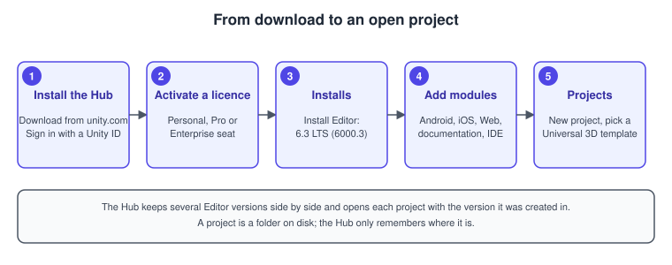
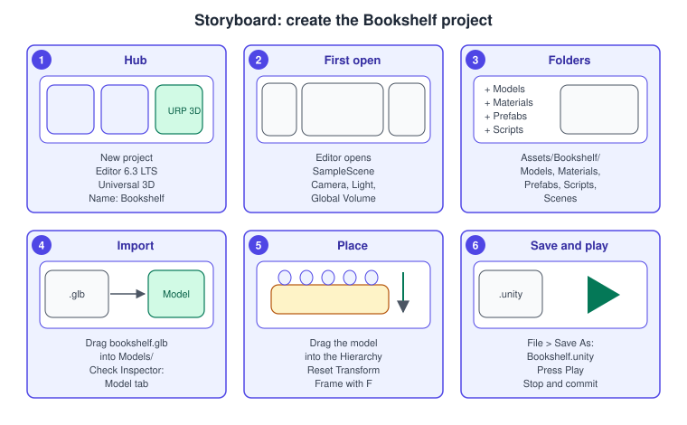
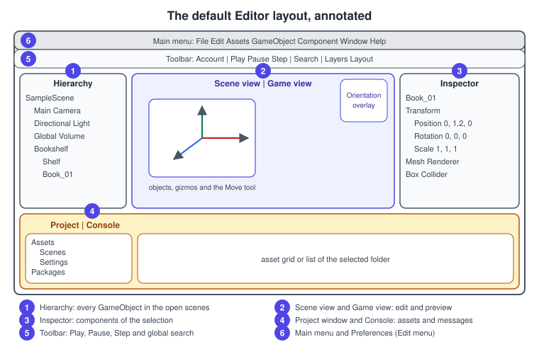
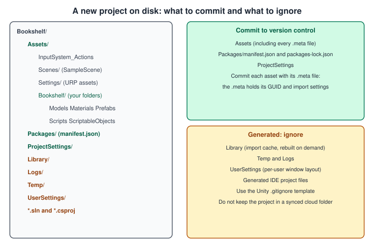

Getting Started: Hub and Editor
|
This content was generated with the assistance of AI and should be verified against the official documentation before being relied on in production. |
Every Unity project starts in the same place: the Hub installs an Editor version, creates a project folder from a template, and opens that folder in the Editor. After that, almost all of the work happens in a handful of windows. This page installs Unity 6.3 LTS, creates the Bookshelf project that the rest of the Unity section builds on, tours the windows and the folders on disk, and ends with a first script on a first book.
The facts were checked in November 2026. The version documented is Unity 6.3 LTS (6000.3, released on 4 December 2025 and supported until December 2027); where the later Unity 6.6 release or the Unity 7.0 alpha differs, the text says so.
Requirements: Windows, macOS or Linux with the Editor’s published system requirements, a Unity ID, and an activated licence (see
Licensing and Pricing). The Editor is not a web or mobile app: it runs on workstation or laptop form factors without emulation or compatibility layers.
The Bookshelf project is the running example: a whitebox shelf and a Book prefab on the Universal Render Pipeline (URP) with the Input System package, whose steps are drawn in the Render Pipelines Overview.
If you came here from the general Scene Graphs and Asset Formats page, this is where its ideas become windows and files.
The Hub and the Editor are two programs

The Unity Hub is the launcher. It signs you in, activates the licence, downloads Editor versions and the optional modules that go with them, lists your projects, and starts each project with the Editor version that project was created with. The Editor is the program in which you actually build the game. The two are separate on purpose: a studio keeps several Editor versions side by side (for example the 6.3 LTS of a game in production and a newer release for evaluation), and the Hub picks the right one for each project. You can also install an Editor without the Hub, with installer files, the Download Assistant, or from the command line, but modules can only be added later through the Hub to Editors that the Hub installed.
Source: Install Unity
Which version to install
Unity 6 has two kinds of release. A Long Term Support (LTS) release is supported for two years and is recommended for games that are about to lock in production; an Update release is supported until the next one is published, with the same quality assurance and weekly patches. Unity 6.3 LTS is the LTS this section documents. Unity 6.0 LTS was supported through October 2026, so a new project should not start on it. By November 2026 the latest Update release is Unity 6.6, the last Supported release of the Unity 6 family, and Unity 6.7 LTS is in beta. Unity 7.0 is in a public alpha on a CoreCLR runtime foundation and is not for production use. The practical rule: stay on one release for the length of a project, and use 6.3 LTS unless you need something only a later release has.
| Release | Status in November 2026 | Use it for |
|---|---|---|
Unity 6.0 LTS (6000.0) |
supported through October 2026 |
keeping an existing project alive; do not start new work on it |
Unity 6.3 LTS (6000.3) |
supported until December 2027 |
new production work, and the version of every example in this section |
Unity 6.6 (6000.6) |
latest Update release |
trying newer features: WebGPU production-ready, the Build Analysis window, no domain reload by default for new projects |
Unity 6.7 LTS |
beta |
the next LTS; check its release notes before moving |
Unity 7.0 |
public alpha |
experimentation only |
Source: Unity 6 releases and support
Installing the Editor
Install the Hub from the Unity website and sign in with a Unity ID. Then install an Editor version from it.
-
Open the Hub.
-
Select Installs in the left sidebar.
-
Select Install Editor at the top right. The window has tabs for Official releases (the LTS releases), Pre-releases (alpha and beta versions) and Archive (older, unsupported versions).
-
Choose Unity 6.3 LTS and select Install.
-
In the modules window, select the modules you need and select Install. Download progress is shown in the Downloads panel of the Hub toolbar.
Modules are optional components of an Editor installation: build support for platforms (Android, iOS, Web, Universal Windows Platform, Linux and so on), documentation, language packs and developer tools. Install only what you need, because each platform module is large. For the Bookshelf, the desktop build support that matches your operating system is enough to start; the Android and Web modules are added later, when Build Profiles and Platforms and Web and WebGPU need them.
-
Open the Hub and select Installs.
-
Find the Editor version and select Manage.
-
Select Add modules.
-
Choose the modules and select Install.
If Add modules is missing, the Editor was installed without the Hub; uninstall it and reinstall through the Hub, or install the module from the installer files.
Check the system requirements first
The manual lists the hardware and operating-system requirements of the Editor and of the Player for every target platform on one page. The Editor requirements and the Player requirements differ: a game can target an older Android device than the Editor supports as a host. Two platform minimums changed recently: Unity 6.5 and 6.6 raised the Android minimum to API level 26 with OpenGL ES 3.1, and 6.6 deprecated macOS on Intel processors.
Creating the Bookshelf project
Projects are created from templates. In the Hub, templates come in three categories: Core (general 2D and 3D, VR, AR, MR and mobile starting points that set up the render pipeline and packages), Sample (pre-built scenes that demonstrate setups) and Learning (guided tutorials). The Bookshelf uses a Core 3D template that selects URP; recent Hubs call it Universal 3D. The template installs URP, the Input System package and a default scene with a camera, a directional light and a global volume for post-processing.
-
Open the Hub and select Projects, then New project.
-
Select the Editor version, Unity 6.3 LTS.
-
Choose the Core 3D template that uses URP. If the template is not downloaded yet, select Download template and wait for it to finish.
-
Enter the project name,
Bookshelf. -
Choose the location on disk. Keep it outside any cloud-synchronised folder.
-
Optionally choose a source control provider to create a remote repository now.
-
Select Create project. The Hub creates the project, adds it to the list and opens it in the Editor.
Source: Unity Hub: Create a new project

The first open takes a while: Unity imports the template’s assets and compiles its scripts, and it shows a progress bar while it does. The result is a project folder that contains the
folders described below and a scene called SampleScene.
Storing a project in cloud-synchronised storage (a shared drive that syncs files in the background) is an unsupported workflow that can corrupt the project, because the Editor writes many small files and expects exclusive control of them. Use version control instead.
Source: Create your first project
The Editor window by window

The default layout is a set of dockable windows. You can drag any tab to another place, float it, or save the arrangement as a layout from the toolbar; the main windows are:
-
Hierarchy. Lists every GameObject in the open scenes, indented by parent and child. Right-click empty space and choose a GameObject to create, or press
Ctrl+Shift+N(macOSCmd+Shift+N) for an empty one. Duplicate withCtrl+D(macOSCmd+D). Drag one object onto another to parent it, and drag it to a free position to unparent it. Several scenes can be open at once, each shown as its own group. Paste after a copy keeps the world position of a pasted child. -
Scene view. The editing view of the world: select, move, rotate and scale objects with the tools in the top-left corner, with the Hand tool for navigation. Gizmos show the axes of the selection (red, green and blue for X, Y and Z), lights, cameras and colliders.
-
Game view. What the game camera sees, at the resolution you choose. It is what the player will see and where the game runs when you press Play.
-
Inspector. Shows the components of the selected GameObject, with their properties. The name, active checkbox, tag, layer and static flags are at the top.
-
Project window. The files under the project’s
Assetsfolder (and the packages), as a folder tree and an asset browser. Open it from the Window menu, General, Project, or withCtrl+5(macOSCmd+5). -
Console. Log messages, warnings and errors from the Editor and from
Debug.Logcalls in scripts. Read it after every script change: a compile error means the Editor keeps running the previous code. -
Toolbar and overlays. The toolbar holds the Play, Pause and Step buttons, search, the layers menu and the layouts menu. Overlays are panels inside the Scene view.
The Hierarchy and the new Hierarchy
Unity 6.3 introduces a different version of the Hierarchy window as a preview. It shows extra information about GameObjects and can alternate the colour of rows. You enable it from Preferences, under General, by selecting the New Hierarchy setting. Because it is in preview, its behaviour may change in later versions; the classic Hierarchy remains the default.
Source: Hierarchy window reference
Icons in the Hierarchy tell the story at a glance: an outline cube marks a plain GameObject and a blue cube marks a prefab instance (see Prefabs and Scenes). Names are just labels; the order is the order of creation, which you can change by dragging.
Create new objects with a naming plan from the start. A Bookshelf with Shelf, Board_1 to Board_5 and Book_01 and so on is easy to read, and scripts that use Find by name break if the label changes.
Overlays in the Scene view
Overlays are small panels floating over the Scene view: the Tools overlay, the View Options overlay that chooses which layers are shown, the Orientation overlay (the axis gizmo that snaps the camera to a direction when you click an arm) and so on. Unity 6.3 made overlays more dynamic: you can collapse and expand them, change their height and size, drag them onto the toolbar, or dock them at any edge of the view.
Source: Overlays reference
Navigating the Scene view
With the View (Hand) tool selected (shortcut Q), dragging pans the camera, Alt (macOS Option) plus left-drag orbits it around the pivot, and Alt plus right-drag zooms. The arrow keys walk the camera forward, backward and sideways, and Shift speeds up any of them.
Flythrough mode is the first-person way: hold the right mouse button, look with the mouse, and press W, A, S and D to move. Select an object and press F to frame it in the Scene view. Flythrough mode is meant for perspective views and is not available in 2D mode.
Source: Scene view navigation
The camera you navigate is the Scene Camera, an editing camera that is not part of your scene. The camera that the player sees is a separate Main Camera GameObject with a Camera component and shows up in the Game view. Beginners often move one while expecting the other.
What is on disk

A Unity project is an ordinary folder. Opening it in the Editor creates and fills several subfolders:
| Folder | Role |
|---|---|
|
everything you create or import: scripts, scenes, models, textures, materials, prefabs, audio. The template adds |
|
the project manifest ( |
|
project-wide settings: Player, input, physics, tags and layers, graphics, quality. |
|
the cache of imported assets, compiled assemblies, shaders, packages and Editor state. Unity regenerates it; it can be large and is safe to delete when the project is closed. |
|
log files and temporary data of the running Editor. |
|
per-user preferences, such as the window state, which are not shared with a team. |
Source: Default project directories
Some folder names inside Assets are reserved and have special meaning: Editor holds scripts that run only in the Editor and are not part of the Player build, Resources holds assets that can be loaded by name at runtime, StreamingAssets is copied as it is into the build, and Plugins holds native libraries.
Do not use those names for ordinary folders. The Editor folder rule is the reason that the editor scripts in this section sit in Editor folders or assembly definitions.
Source: Reserved folder name reference
The meta files
Every file and folder in Assets has a companion .meta file with the same name. It stores the asset’s GUID, a unique identifier that other assets use to refer to it, and its import settings. Moving a file inside the Project window moves its .meta file with it, so references stay valid; moving it
outside the Editor, in a file manager, breaks the link if the .meta file stays behind. Always commit an asset together with its .meta file.
Version control from day one
Use version control for every project, even a solo one. The rule is to commit Assets, Packages and ProjectSettings, and to ignore the generated folders. Unity supports Unity Version Control, Perforce and Git; Git needs a Unity-specific ignore file and, for large binary assets, a large-file extension.
Scenes and prefabs are text files in YAML, so Unity ships a smart merge tool (UnityYAMLMerge) that merges them in a semantically correct way.
# Bookshelf/.gitignore, the essentials of a Unity ignore file
/[Ll]ibrary/
/[Tt]emp/
/[Oo]bj/
/[Bb]uild/
/[Bb]uilds/
/[Ll]ogs/
/[Uu]ser[Ss]ettings/
# Generated IDE project files
*.csproj
*.sln
*.slnx
.vs/
.idea/
# OS files
.DS_Store
Thumbs.dbSource: Version control
Do not lose the .meta files to a blanket ignore rule: they must be tracked. Check that the project’s Asset Serialization mode is Force Text and its Version Control mode is Visible Meta Files, so that scenes and prefabs are readable text and the .meta files exist on disk.
Script editors
Unity does not include a code editor. In Preferences, under External Tools, choose the program that opens C# scripts. The common choices are Visual Studio on Windows (and Visual Studio Code on any system) with the Unity integration, and JetBrains Rider on all three. Visual Studio for Mac was retired by Microsoft on 31 August 2024, so on macOS use Visual
Studio Code with the Unity extension or Rider. The integration packages (com.unity.ide.visualstudio, com.unity.ide.rider) are installed by the template and generate the project files that give the editor completion and diagnostics. See IDEs and Tools for the C# side.
Source: Visual Studio Editor package
Source: JetBrains Rider Editor package
Importing the shared Bookshelf model
All pages of this section use the same original model, bookshelf.glb, a glTF 2.0 binary with a shelf of six boards, nine books that share one mesh, and PBR materials, with the PNG textures beside it in the same folder of the site. Unity’s built-in importers read FBX, OBJ, Collada and DXF files and the formats of the common modelling programs; glTF is not among them. The glTF format is read by Unity glTFast, an official package that imports and exports glTF files in the Editor and at runtime, and which is installed from the Package Manager.
-
Open the Package Manager from the Window menu.
-
Choose the Unity Registry list, search for
glTFast(the packagecom.unity.cloud.gltfast) and select Install. The Editor installs the package and its dependencies and recompiles. -
Download bookshelf.glb and the four textures from the site into
Assets/Bookshelf/Models, in the Project window or in a file manager (then let the Editor refresh). -
Select the imported asset. The Inspector shows its import settings; the textures are PNG files, sRGB base colour.
-
Drag the model into the Hierarchy. Reset its Transform (the three dots menu of the Transform, then Reset) so that it sits at the origin and faces the camera.
-
Press
Fin the Scene view to frame it.
Source: Unity glTFast: Installation
If you prefer FBX, export the model from a modelling program such as Blender and import it the same way; Unity recommends FBX as the best-supported source format, and converts the other supported formats to it on import.
Source: Model file formats reference
Setting up the folders with a script
You can create the folders by hand, but a ten-line Editor script makes the layout repeatable and also shows the first piece of the Editor’s scripting API. Place the script in an Editor folder (for example Assets/Bookshelf/Editor/BookshelfFolders.cs).
#if UNITY_EDITOR
using System.IO;
using UnityEditor;
using UnityEngine;
namespace Bookshelf.Editor
{
/// <summary>Creates the standard Bookshelf folder layout under Assets.</summary>
public static class BookshelfFolders
{
private const string Root = "Assets/Bookshelf";
private static readonly string[] Children =
{
"Art", "Materials", "Models", "Prefabs", "Scenes", "Scripts", "ScriptableObjects", "Settings"
};
[MenuItem("Bookshelf/Create Folder Layout")]
public static void Create()
{
if (!AssetDatabase.IsValidFolder(Root))
{
AssetDatabase.CreateFolder("Assets", "Bookshelf");
}
foreach (string child in Children)
{
string path = $"{Root}/{child}";
if (!AssetDatabase.IsValidFolder(path))
{
string guid = AssetDatabase.CreateFolder(Root, child);
Debug.Log($"Created {AssetDatabase.GUIDToAssetPath(guid)}");
}
}
AssetDatabase.Refresh();
}
}
}
#endifSource: AssetDatabase.CreateFolder
Run it from the Bookshelf menu that appears in the main menu bar after the script compiles. The #if UNITY_EDITOR guard and the Editor folder are belt and braces: each is enough by itself to keep editor code out of a Player build.
A first script on a first book
A script is a class that derives from MonoBehaviour; Unity runs its Update method once per frame while the object is active. The following component spins a book around its vertical axis. The next page, C# Scripting and the MonoBehaviour Lifecycle, explains the full lifecycle; here
the goal is to see something move.
using UnityEngine;
namespace Bookshelf
{
/// <summary>Spins the book it is attached to around the world up axis.</summary>
[DisallowMultipleComponent]
public sealed class BookSpinner : MonoBehaviour
{
[SerializeField, Tooltip("Rotation speed in degrees per second.")]
private float degreesPerSecond = 45f;
private void Update()
{
// Multiplying by deltaTime makes the speed independent of the frame rate.
transform.Rotate(0f, degreesPerSecond * Time.deltaTime, 0f, Space.World);
}
}
}Source: Transform.Rotate
Put the file in Assets/Bookshelf/Scripts/BookSpinner.cs; the file name must match the class name. Drag the script onto a book in the Hierarchy (or use Add Component in the Inspector), press Play, and the book spins. Change degreesPerSecond in the Inspector while the game runs to see the value change at once; those changes
are lost when you stop, which is a good way to experiment. Stop Play mode before you edit anything you want to keep: changes to an object’s properties in Play mode are discarded on exit.
Saving, undo and Play mode
Save the scene with Ctrl+S (macOS Cmd+S); the Editor prompts for a location the first time. The Edit menu has Undo and Redo, and the Undo History window lists the actions. Unsaved scenes are marked in the Hierarchy with an asterisk. Saving the scene does not save script changes in other
windows of your code editor, and saving a script does not save the scene; they are separate files.
Play mode runs the scene in the Editor. It is a different state from edit mode: components run, physics simulates, and every change to a scene object is temporary. Since Unity 6.6 new projects use the Reload Scene only option by default, which enters Play mode without reloading the scripting domain, so a static variable keeps its value between runs unless you reset it; see C# Scripting and the MonoBehaviour Lifecycle.
Source: Saving
Common mistakes
-
Editing in Play mode and losing the work. The Editor tints the interface while playing; make that a habit cue. Copy a component in Play mode and use "Paste Component Values" after stopping if you want to keep the result.
-
Putting a project in a cloud-synchronised folder. The sync clients race with the Editor and can corrupt
Libraryand the scene files. -
Deleting
.metafiles, or committing an asset without its.meta. All references from scenes and prefabs are GUIDs; losing the file loses the references. -
Moving assets outside the Editor. Move them in the Project window so the
.metafollows. -
Ignoring the Console. A compile error stops every script from updating; the Editor keeps running the last good code.
-
Starting a long project on an Update release or a pre-release. Use an LTS release for production.
-
Giving a file a different name from its
MonoBehaviourclass. Unity cannot attach it. -
Using the Scene Camera when you mean the Game camera.
-
Installing every platform module. The disk space adds up quickly, and so does the time of an update.
Performance notes
-
The first import of a project can take minutes; the
Libraryfolder makes later opens fast. Do not delete it casually, and exclude the project folder from real-time antivirus scanning where your policy allows. -
Keep the project on a fast local SSD. Importing and shader compilation are heavy on small random reads and writes.
-
The Editor’s own cost is in the Game view too: the Stats overlay and gizmos make Play mode slower than a build. Measure performance in a Player build, not in the Editor (Profiling and Optimization).
-
Fewer open windows means fewer repaints; close the ones you are not using when you profile.
What changed recently
| When | What |
|---|---|
Unity 2022 and earlier |
the Built-in Render Pipeline and the Standard shader as the default 3D template; Visual Studio for Mac was a supported editor on macOS |
Unity 6.0 (October 2024) |
the Build Profiles window replaces the old Build Settings window; the platform named WebGL becomes Web; the Input System package is installed by default in new projects; the Personal plan’s ceiling and splash screen change |
Unity 6.3 LTS (December 2025) |
preview of the new Hierarchy window; dynamic overlays; deeplinks into the Editor; the GPU lightmapper is the default |
Unity 6.5 |
the Built-in Render Pipeline is deprecated; Android minimum API 26 and OpenGL ES 3.1 |
Unity 6.6 (September 2026) |
"Reload Scene only" is the default Play mode option for new projects; macOS on Intel is deprecated; the Build Analysis window arrives |
Unity Hub (2026) |
new releases of the Hub bundle a Unity command-line interface in beta and add a "Use the Unity CLI" option when creating a project |
Where the books are outdated
UIA chapter 1 and GDP chapter 3 introduce the Editor and the project structure for Unity 2020.3 and 2021. The concepts (windows, GameObjects, components, assets) are unchanged; the specifics have moved:
| Book (2020.3 and 2021 era) | Today |
|---|---|
UIA ch. 1: the Unity Hub and the Editor are installed separately by version number such as 2020.3 |
Releases are named Unity 6.x; install the 6.3 LTS through the Hub; the project is opened with the version that created it |
UIA ch. 1: the default new project is a Built-in Render Pipeline project with the Standard shader |
The Core 3D template uses URP and its Lit shader; the Built-in Render Pipeline is deprecated since Unity 6.5 |
UIA ch. 1: code editor is Visual Studio, on both Windows and macOS |
Visual Studio for Mac is retired (31 August 2024); use Visual Studio Code with the Unity extension, or Rider, on macOS |
UIA ch. 2, 3, 6, 8: the legacy Input Manager, and |
The Input System package is installed by default in new projects; UI Toolkit is recommended for new UI |
GDP ch. 3: component-based Editor workflow |
Still valid; see GameObjects, Components and Transforms |
UIA ch. 12, 13: File > Build Settings and the WebGL platform |
Build Profiles and the Web platform |
See also
-
Licensing and Pricing: activate a licence in the Hub.
-
GameObjects, Components and Transforms: what the Hierarchy and the Inspector show.
-
C# Scripting and the MonoBehaviour Lifecycle: the lifecycle behind
Update. -
Prefabs and Scenes: saving scenes and turning the book into a prefab.
-
Asset Store and Packages: the Package Manager, packages and the manifest.
-
Build Profiles and Platforms: from the Editor to a build.
-
Editor Scripting and Tooling: more Editor scripts like the folder menu above.
-
Scene Graphs and Asset Formats: the general ideas behind scenes, assets and the glTF format.
-
Game Loop and Frame Timing: what happens each frame when you press Play.
-
C# IDEs and Tools: the code editors.